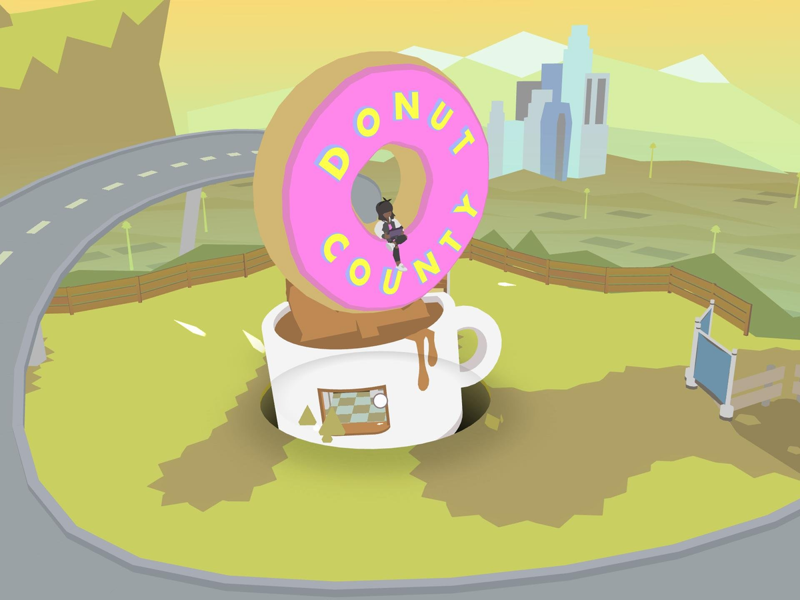
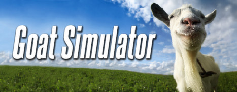
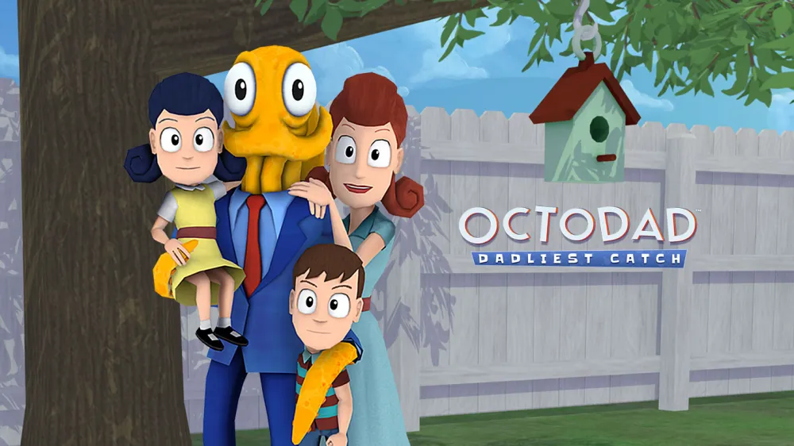

Today, I am going to introduce you to some of the hottest pointless games currently on the market. I assure you that these are bona-fide time wasters that will keep you occupied for hours on end.

Donut County is an indie game in which you control a hole that swallows up everything in its path, plunging a small town into chaos. You play as a racoon named BK, delivering these (donut) holes to the hungry and unassuming townspeople unfortunate enough to mistake your food service for good service.
Donut County can be enjoyed by a wide range of players, but is particularly well suited for younger, casual, or cozy gamers. If you like reasonably easy puzzles with quirky characters and a lighthearted storyline, and are looking to waste only an hour or two of your time, this game is for you.

Untitled Goose Game is a comical indie game. Players step into the webbed feet of the titular goose, embarking on a mission wreak havoc in a peaceful village through a myriad of playful hijinks. With the game's clever puzzles and simple, yet entertaining, gameplay, this game has garnered a dedicated fanbase and provides a welcome dose of fun and goofiness.
Untitled Goose Game is perfect for gamers who appreciate some lighthearded mischief and mayhem. If you're looking for a game with clever puzzles, a unique premise, and whimsical animation, this is an excellent choice for you.

Have you ever wanted to know what it's like to be a goat? Well, look no further and allow me to introduce you to Goat Simulator. In this sandbox-style game, you control a goat with a penchant for chaos, headbutting townsfolk, performing wild stunts, and causing general bedlam. With its wacky physics and comical gameplay, Goat Simulator has truly cemented its place as the GOAT of all animal sim games.
Goat Simulator is tailor-made for gamers who appreciate absurdity and chaotic humor. It's a great choice for those who enjoy unconventional, unstructured gameplay. Fans of open-world sandbox games and those seeking a break for traditional gaming conventions will appreciate the bizarre and comical nature of Goat Simulator. If you want to break away from the tedium of daily life and just be a lawless goat for a while, this is the game for you.

Octodad: The Dadliest Catch is a quirky and comical indie game that follows the life of an octopus disguised as a human father. Players must navigate everyday tasks while controlling Octodad's wobbly, awkward movements, all while keeping his true identity hidden from his family. Octodad offers a unique take on the absurdity of mundane life, and showcases the humor in the struggle to blend in as an octopus in a human world - and I think that at its core, that's a feeling we can all relate to in one way or another.
Octodad: The Dadliest Catch is perfect for gamers who appreciate lighthearted, offbeat humor and unconventional, challenging gameplay. This game is easily the most difficult on the list, and for those of you looking for an even more challenging experience, I would highly suggest the multiplayer mode. If you've ever wondered what it's like to be an eight-legged cephalopod who's living a lie, then this game is perfect for you.